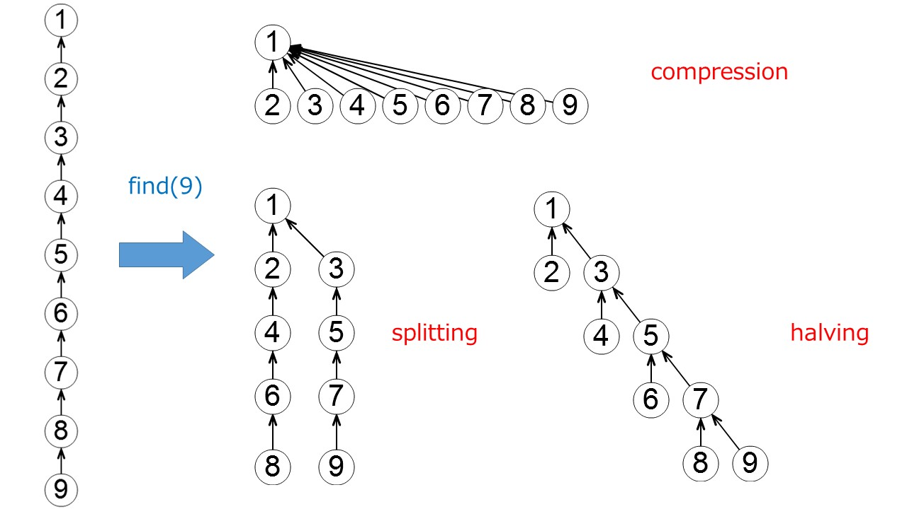

Union Find
個人的メモ
(計算量の細かい話)
計算量は $m(\ge n)$ 回の Find 操作, $n$ 回の Union 操作のクエリ列を処理するのに $\O (n + m \alpha(m, n))$ 時間であることが証明されている(後の解析で $\O (n + m \alpha(m + n, n))$ 時間に落ちることがわかっている).
ここで $\alpha(m, n)$ はアッカーマン関数 $A(i, j)$ を用いて以下のように定義される.
まず増加の非常に急激な関数であるアッカーマン関数は $A(i, j)$ は以下のように再帰的に定義される.
$A(1, j) = 2^j (j \ge 1)$, $A(i, 1) = A(i - 1, 2) (i \ge 2)$, $A(i, j) = A(i - 1, A(i, j - 1)) (i, j \ge 2)$
このとき $\alpha(m, n) = \min \{ i \ge 1 \mid A(i, 4 \lceil m / n \rceil) > \log n \}$ と定義される. これを見ると $m = \Omega(n \log \log n)$ で $\alpha(m, n) = 1$, $m = \Omega(n \log^* n)$ で $\alpha(m, n) \le 2$ みたいなことが分かり,
要をするにアッカーマン関数の逆関数 $\alpha(m, n)$ は実用上定数と考えてよい..
次に $a(i, n) = \min \{ j \ge 1 \mid A(i, j) > \log n \}$ を定義する.
このとき任意の正整数 $k$(定数) について $m (\ge n a(k, n))$ 回の Find 操作, $n$ 回の Union 操作のクエリ列を処理するのにかかる時間は $\O (m)$ time であることも言える($\alpha(n a(k, n), n) \le k$ より).
Union Find の計算量の解析の論文としては "Efficiency of a Good But Not Linear Set Union Algorithm" [Tarjan 1975] や "Worst-Case Analysis of Set Union Algorithms" [Tarjan, LEEUWEN 1984] が詳しい.
過去に上記論文の簡易版として Union Find の計算量についての記事を昔書きました. 簡単ではないので興味のある方は読んでみてください.
U-TOKYO AP Advent Calendar 2017 8 日目: Union Find の計算量の話
(色々な Union Find)
パスの圧縮(path compaction) には主に compression, splitting, halving などが提案されている(最悪計算量はオーダーの意味で変わらない).

おそらく競プロer の実装で $1$ 番良く見かけるのは compression で find を行った際にその頂点と根のパス上のすべての頂点の親を根に付け替えるものである.
$1$ 番(それ以降のアクセスが)高速になる圧縮手法であるが, $2$ pass, つまり頂点から根に辿り, その後パス上の頂点の親をその根に付け替えるために戻る必要がある. 他の $2$ つは $1$ pass である.
他にも collapsing や early linking などまあ色々ある(上記と違いオーダーが変わったり, 連結成分のサイズなどの付加情報をうまく管理できないなどの制約があったりする).
計算機実験の結果を示した $1$ つの論文として "Experiments on Union-Find Algorithms for the Disjoint-Set Data Structure" [Patwary, Blair, and Manne 2010] が興味深い.
この論文では test data としていくつかの種類のグラフを用意し, 辺をランダムに並び替え, 辺に対応する unite 操作を連結成分が $1$ つになるまで行った結果かかる計算時間を示している.
これは全辺のコストがすべて同じグラフで辺をランダムに並び替えて, Kruskal 法を行っていることに等しい.
多くのものについては実行時間にあまり差がないのだが RemSP(early linking の一種) が優位に高速であることが実験結果から見てとれる(いっても $10$ ％とかだけど).
せっかくなので RemSP を "おまけ" として載せたのでコードを見てもらえると分かりやすいが, unite$(x, y)$ の際に $x, y$ 別々に並行して親をたどっていくということをする.
このとき, $x$ の親, $y$ の親のうち index の小さい方の頂点($x$ とする) について親をたどり, 同時に $x$ の親は $y$ の親を指すように付け替える.
常に各頂点について親は自分自身もしくは自分より index の大きい頂点になることに注意する.
RemSP は Kruskal 法のように unite クエリが same クエリと共起する場合にのみ適用でき,
unite せず, 単に same もしくは find クエリを呼び出すときは適宜パス圧縮を組み合わせる必要がある.
またサイズなどの付加情報はこの手法では乗せることができない.
ちなみにこのアルゴリズムのクエリにかかるならし計算量は $\O( \log n)$ であり, 計算量の意味では optimal でない.
SODA14 の "Disjoint Set Union with Randomized Linking" [Goel, Khanna, Larkin, Tarjan 2014] で理論計算量が optimal でない RemSP がなぜ高速に動作するかの $1$ つの理由づけがなされていて,
index を random につけた場合に early linking にかかる平均計算量がアッカーマン関数の逆関数になり, optimal となることが示されている.
おそらく random 性がある程度保証されるような状況では RemSP は速いが,
そうでない場合は遅くなりうるので競技プログラミングのような悪意のあるテストケースが含まれている可能性の高い状況では速くならないのではないかと思う.
そもそも Union Find パートにかかる計算量がボトルネックになることはめったにないだろうけど.